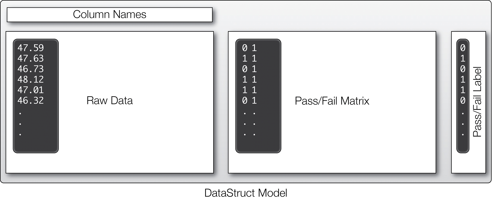
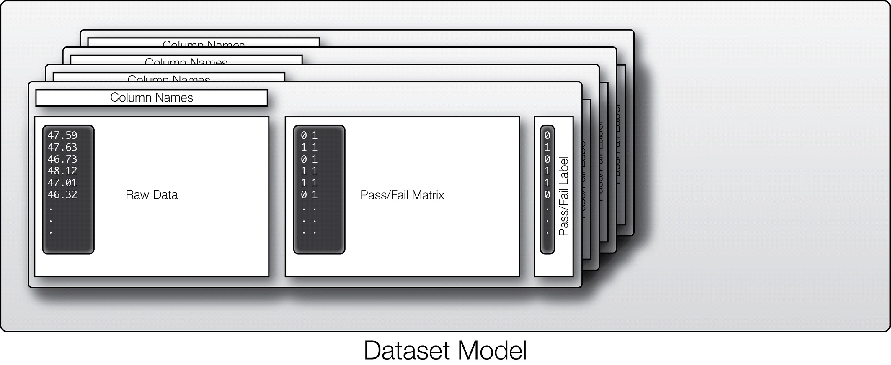
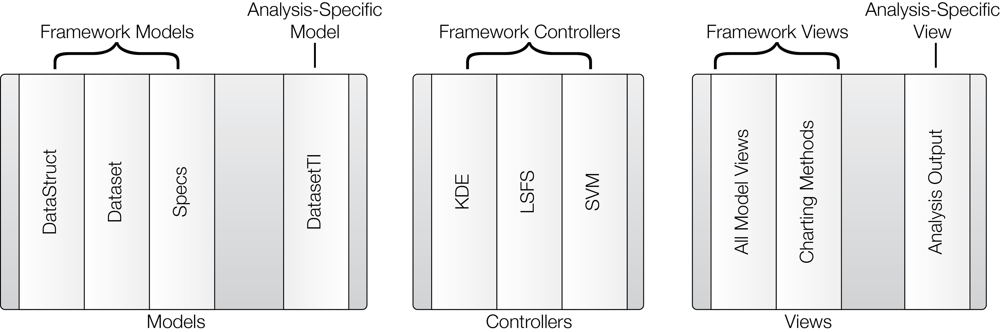

Running MVC ArchitectureProcess Step 1: Load a CSV file consisting of device-level raw dataset. This actually loads device data in a standadized datastructure and this contains various raw data coloumns.Each row consists of a single chip's data with its pass/fail decision.
We implemented several models for the analysis demonstrated in this work. Specifically, we required encapsulation of the specifications for each performance, datasets with device-level measurements, and within each wafer we wished to break out alternate tests and specification performances into separate collections to facilitate the use of alternate tests with a trained classifier, and derivation of pass/fail labels for the performances via the specifications. Thus, we defined a specification class that encapsulates the device specifications and provides key-value access to upper and lower limit specifications for each performance. For each wafer dataset, we defined a general hierarchical data model for our framework. The data model class is instantiated by passing a CSV filename to the constructor, which loads device data into a standardized data structure containing column names, device-level raw data (i.e., each row corresponds to a single device), a pass/fail matrix (which stores the result of comparing each cell in the raw data matrix to device specifications), and an overall pass/fail label column, as shown in Figure 5. This data structure is the atomic model unit of our MVC framework. Finally, we added convenience methods directly to the data structure for subsetting by column/row, joining by column/row, a CSV export method, and a simple view.

However, as noted previously, it is often desirable to partition data into various subsets for many common analysis tasks. Thus, within our framework we also implemented a higher-level Dataset model (associated with each block of data from, say, a wafer) possessing a collection of DataStructs, as shown in Figure 6. As with the DataStruct, the dataset model was defined with associated convenience methods: subsetting, joining, exporting to CSV, computing the pass/fail matrices for all subordinate DataStructs, and a simple view.

Note that our aim is to provide, via the framework, general models that apply to as many analysis tasks as possible. As noted previously, for specific analyses one can simply superclass the default models to modify their behavior as necessary. For the Dataset model just described, we aimed to provide the means to gather a collection of DataStructs, but wanted to avoid specifically articulating how this should be done. Thus, for the demonstration provided in this work, we superclassed the Dataset model and created a custom model that prescribes a particular configuration of DataStructs and adds additional custom behavior. Step 3: Construct a model from the dataset based on algorithms used to form a training model. The simplest kind of linear regression involves taking a set of data (xi,yi), and trying to determine the "best" linear relationship
y = a * x + b
Commonly, we look at the vector of errors:
ei = yi - a * xi - b
and look for values (a,b) that minimize the L1,
L2 or L-infinity norm of the errors. For problems
involving multivariate sets of data, the number a
becomes a matrix, and b a vector, but the idea
is similar.
The data files have a simple format:
Here xi are the features given as input and yi are the estimated values dependent on the xi's. From the provided dataset we will form a training model-set for future use based on various learning algorithms. Step 4: Based on these trained models predict future information from the dataset by using prediction algorithms. Then show the results to the user through its view architecture. In offline analyses, the most important information to provide in a view is (i) a running log of the analysis, and (ii) charts which describe the results once the run has terminated. Typically, user interaction during the run is not required for offline analyses. Thus, our views heavily relied on the model view convenience classes to output model information during the analysis run, along with several helper methods that generated plots from the outcome of the analysis. The information generated by these views was used in collecting the experimental results presented in the subsequent “Results” section. For example we can implement various algorithms like Non-Parametric Kernel Density Estimation,Laplacian Score Feature Selection, and a Support Vector Machine. Details of the implementation of each of these controllers, and rationalization of their necessity for the early test metric estimation adaptive test analysis task undertaken in this work, can be found in [5]. Each of these controllers exposes a public API (typically only a single Controller.run() method is required) which can be executed by a controller instance to run the analysis task. For the most part, the run methods of each controller take only a DataStruct argument and parameters required to complete the controller task. For example, consider the kernel density estimation controller, which generates a population of synthetic device observations based on a density estimated from a set of real device measurements. This controller is passed a DataStruct comprised of the base population of devices which are used to estimate the density, along with parameters required for density estimation such as the number of synthetic device instances to generate and the bandwidth of the Epanechnikov kernels [7] employed to generate the density. Note that the controllers are defined to be as general as possible, and are not specific to the analysis at hand, maximizing code reusability. The complete core MVC framework we have implemented is shown in Figure 7, showing all models, views, and controllers; a distinction is made between general modules constructed as part of the core MVC framework and analysis–specific modules required for the example analysis demonstrated in this work.

|